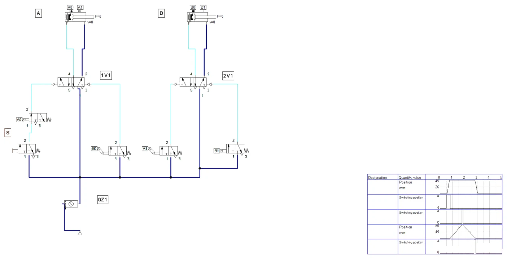
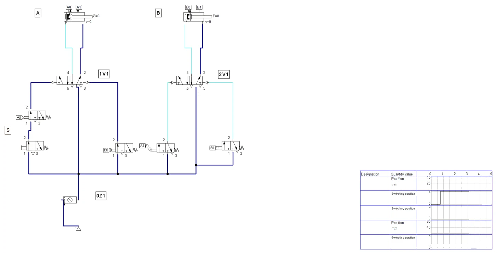
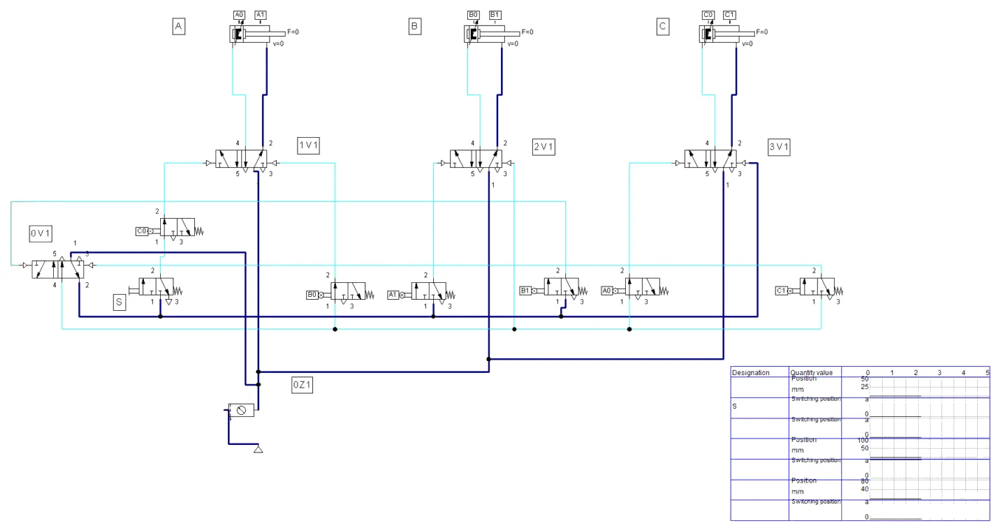
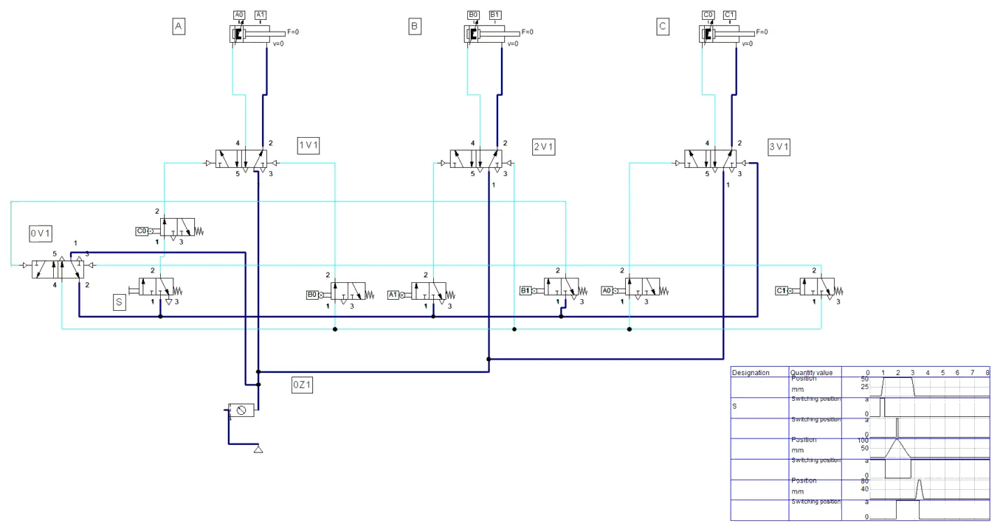

POSTUPAK · RADNI LIST V05 · FLUIDSIM
Postupak V05 · vježbe V11 i V13 · 4 sata
Postupak V05 — VDMA metoda i kaskadna metoda u FluidSIM-u
Cijeli radni list V05 korak po korak: slijed A+ B+ B− A− VDMA metodom s jednosmjernim valjcima, pokus s blokirajućim signalom, zatim slijed A+ B+ B− A− C+ C− kaskadnom metodom s dva grupna voda. Uz svaki korak su snimke zaslona i potpuna rješenja.
- nacrtati sklop s dva cilindra i graničnim ventilima vezanim uz položaj na hodu
- ukloniti blokirajuće signale jednosmjernim valjcima i pokazati blokirajući signal pokusom
- objasniti zašto prekratak impuls zaustavlja sklop
- podijeliti slijed u grupe i nacrtati kaskadni sklop s kaskadnim ventilom 0V1
- pratiti tlak u grupnim vodovima tijekom ciklusa
- spremiti shemu, popuniti zapis simulacije i predati rad
O postupku
Ova stranica je postupak za radni list V05: sve što se radi na računalu, od nove sheme do predaje, redom kojim je zadano. Tekst zadatka, sheme, pitanja i rješenja isti su kao na stranicama vježbi V11 VDMA metoda s dva cilindra — blokirajući signal i V13 Kaskadna metoda; ovdje su dopunjeni koracima u FluidSIM-u i rezultatima simulacije.
Rješenja su skrivena ispod svakog pitanja. Najprije riješite sami, a onda otvorite Prikaži rješenje i usporedite.
Gotove sheme (rješenja) za FluidSIM
- PIH_V11_rjesenje_v01.ct — dio A: shema V11.1 (A+ B+ B− A−, jednosmjerni valjci a1 i b0)
- PIH_V11_blokirajuci_signal_v01.ct — dio A: pokus s blokirajućim signalom (b0 obični valjak)
- PIH_V13_rjesenje_v01.ct — dio B: kaskadna shema V13.1 (dvije grupe, kaskadni ventil 0V1)
Datoteke se otvaraju u FluidSIM-P 4 (File → Open). Snimke zaslona napravljene su u FluidSIM-P 4.2 s engleskim sučeljem. Osnove rada u FluidSIM-u (nova shema, knjižnica, crtanje vodova, provjera, simulacija, dijagram put–korak) opisane su u Postupku V01, odjeljak 0.
0 · Prije početka
- File → New (Ctrl + N) otvara novu shemu; Window → Tile Vertically (Shift + F4) postavlja shemu i knjižnicu jednu uz drugu.
- Elemente povucite iz knjižnice na shemu i dvoklikom otvorite njihove dijaloge. Vod crtajte povlačenjem od priključka do priključka; povlačenjem na postojeći vod nastaje račvanje.
- Oznake (1A1, 1V1, 1S1, 0Z1 …) upisuju se elementom Text iz skupine Miscellaneous (uključite Frame Text).
- Execute → Check Superficially (F6) provjerava crtež; Start (F9), Pause (F8), Stop (F5).
- Ručno tipkalo aktivirate klikom mišem (dok držite tipku miša); Shift + klik zadrži ga pritisnutim. Ručica sa zasunom prebacuje se jednim klikom i ostaje u položaju.
- Granični ventil veže se uz cilindar oznakom: dvoklik na cilindar → kartica Actuating Labels → oznaka (npr. 1S2) i položaj na hodu (od–do u mm); ista oznaka upiše se dvoklikom na valjak graničnog ventila (Mechanical connection → Label).
- Dijagram put–korak: iz Miscellaneous povucite State Diagram i na njega povucite cilindre i ventile čije stanje želite pratiti.
Dio A · V11 VDMA metoda s dva cilindra — blokirajući signal
Zadatak
U kućište malog reduktora treba utisnuti brončanu ležajnu čahuru. Kućište se ulaže ručno u prizmu, a zatim radi naprava s dva dvoradna cilindra. Cilindar A (Ø40/16 mm, hod 40 mm) steže kućište bočno uz graničnik. Cilindar B (Ø63/20 mm, hod 80 mm) okomito utiskuje čahuru trnom. Kad je čahura utisnuta, trn se vraća, a tek zatim se otpušta stezanje. Redoslijed je dakle
A+ B+ B− A−
Za utiskivanje je, prema probnim mjerenjima na uzorcima, potrebna sila od najviše 1400 N. Mreža daje 6 bar pretlaka, a planirani ritam je 4 ciklusa u minuti. Ciklus pokreće radnik tipkalom S, i to samo kad je cilindar A uvučen (signal a0). Položaje klipnjača javljaju granični ventili 3/2 s valjkom: a0 i a1 za cilindar A, b0 i b1 za cilindar B.
Ako se ti signali spoje „izravno“, sklop se neće ni pokrenuti. U dva koraka na istom razvodniku istodobno djeluju oba upravljačka signala, pa razvodnik ostaje u zatečenom položaju. Takav signal zove se blokirajući signal (preklapajući signal). Vaš je zadatak VDMA metodom, pomoću dijagrama put–korak i dijagrama signala, pronaći blokirajuće signale, ukloniti ih jednosmjernim valjcima (valjak s ručicom koja se zakreće u jednom smjeru i daje samo kratak impuls), spojiti sklop i provjeriti rad.
Sigurnost pri radu
Pažnja
Sklop spajajte samo bez tlaka: zaporni ventil pripremne grupe zatvoren, manometar pokazuje 0 bar. Za prvo puštanje namjestite regulator na 3 bar i tek nakon provjere slijeda povećajte na 6 bar. Klipnjača bistabilnog razvodnika može krenuti odmah pri otvaranju zraka, ako je razvodnik ostao prebačen iz prethodnog rada — prije otvaranja pogledajte položaj svih razvodnika i maknite ruke iz zone hoda. Cijev koja se otkači pod tlakom „šiba“; prije otvaranja zraka provjerite je li svaka cijev do kraja utaknuta. Zaštitne naočale su obvezne.
Jednosmjerne valjke ugrađujte prema strelici na kućištu: valjak mora dati impuls u smjeru koji je propisan shemom, a u suprotnom smjeru ručica se samo prelomi i ventil ostaje neaktiviran.
Shema
Oznake na shemi: 1V1 i 2V1 su razvodnici 5/2 cilindara A i B; priključak 14 upravlja izvlačenjem, 12 uvlačenjem. Granični ventili crtaju se u shemi dolje, u redu signalnih elemenata, a njihov stvarni položaj na cilindru označen je crticom iznad cilindra s istom oznakom (a0, a1, b0, b1).
Vježba se radi u FluidSIM-u
Koraci postupka vježbe koji se odnose na spajanje na didaktičkoj ploči i mjerenje štopericom ili manometrom izvode se u simulaciji. Gdje simulacija ne može pokazati pojavu iz pokusa, to je napisano uz korak.
A1 · Shema V11.1 u FluidSIM-u
- File → Drawing Size: DIN A3, položeno (dvije sheme cilindara su široke). 0Z1 (0,6 MPa).
- Cilindar A: hod 40 mm, Ø40/16; cilindar B: hod 80 mm, Ø63/20. Razvodnici 1V1 i 2V1: 5/2-way impulse valve; nazivni protok smanjite na 60 l/min da gibanja budu dovoljno spora za praćenje.
- Granični ventili (3/2 NC, bez Piloted): a0 i b1 obični valjak; a1 i b0 valjak s praznim hodom (idle return, jednosmjerni valjak). Jednosmjerni valjak u FluidSIM-u ima dvije izvedbe u izborniku Mechanically — po jednu za svaki smjer gibanja; a1 mora davati impuls pri izvlačenju A, b0 pri uvlačenju B.
- Actuating Labels: A — a0 na 0–1 mm, a1 na 36–37 mm; B — b0 na 2–12 mm, b1 na 79–80 mm.
- Spoj prema slici V11.1: S (2) → a0 (1), a0 (2) → 14 na 1V1; b0 → 12 na 1V1; a1 → 14 na 2V1; b1 → 12 na 2V1; svi ostali ulazi iz 0Z1.
- F6, State Diagram s A, S, b1, B i b0; Fixed interval 0–5 s. Start i kratko pritisnite S (Slika A1.1).

Iz simulacije: impuls može biti prekratak
S oznakom b0 na samo 1 mm puta i brzim cilindrom B impuls je u našoj simulaciji bio prekratak i 1V1 nije prebacio — sklop je stao nakon B−. Tek s duljim putem pritiska (2–12 mm) sklop radi. To je upravo pojava iz pitanja 6.
Rezultati u tekstu odnose se na našu simulaciju i priložene datoteke; vaša se vremena mogu malo razlikovati ako drukčije namjestite protoke ili otvore prigušnica.
A2 · Pokus s blokirajućim signalom
- Shemu spremite pod drugim imenom. Ventil b0 promijenite u obični valjak i oznaku b0 postavite na 0–1 mm, tako da je pritisnut dok je B uvučen.
- Start i pritisnite S: cilindar A ne krene. Na 14 i 12 razvodnika 1V1 istodobno je tlak (Slika A2.1).

A3 · Pitanja i zadaci
1. Za slijed A+ B+ B− A− napišite tablicu: korak, gibanje, signal koji ga pokreće i razvodnik na koji djeluje.
Prikaži rješenje
| Korak | Gibanje | Signal | Priključak |
|---|---|---|---|
| 1 | A+ | S · a0 | 14 na 1V1 |
| 2 | B+ | a1 | 14 na 2V1 |
| 3 | B− | b1 | 12 na 2V1 |
| 4 | A− | b0 | 12 na 1V1 |
Pravilo: svaki korak pokreće signal koji javlja kraj prethodnog koraka. Prvi korak pokreće start u I-spoju s položajem na kraju zadnjeg koraka.
2. Nacrtajte dijagram put–korak za oba cilindra i ispod njega trake trajanja signala a0, a1, b0 i b1. Označite gdje se na istom razvodniku preklapaju signali za suprotna gibanja.
Prikaži rješenje
Signal a1 traje od kraja koraka 1 do početka koraka 4, a b0 traje od početka ciklusa do kraja koraka 1 i ponovno od kraja koraka 3. U koraku 1 na 1V1 istodobno djeluju S·a0 (na 14) i b0 (na 12). U koraku 3 na 2V1 istodobno djeluju b1 (na 12) i a1 (na 14). Blokirajući su signali b0 i a1.
3. Opišite što ste opazili u koraku 7 postupka (obični valjak na mjestu b0) i objasnite zašto.
Prikaži rješenje
Cilindar A ne krene nakon pritiska na S. Obični valjak b0 pritisnut je dok je B uvučen, pa na priključku 12 razvodnika 1V1 stalno ima tlaka. Kad S·a0 dovede tlak na 14, na obje strane razvodnika djeluje jednak tlak na jednake površine upravljačkih klipova i razvodnik ostaje u zatečenom položaju (uvlačenje). Sklop „stoji“ bez ikakve greške u spojevima — to je tipično ponašanje pri blokirajućem signalu.
U FluidSIM-u
Vidi Sliku A2.1: oba upravljačka priključka razvodnika 1V1 su pod tlakom i razvodnik se ne pomiče.
4. Izračunajte teorijsku i stvarnu silu izvlačenja cilindra B (Ø63 mm) pri 6 bar uz stupanj djelovanja 0,9. Je li sila dovoljna za utiskivanje od 1400 N i kolika je rezerva?
Prikaži rješenje
A = π · D² / 4 = π · 63² / 4 = 3117,2 mm²
Ft = p · A = 0,6 N/mm² · 3117,2 mm² = 1870 N
F = 0,9 · 1870 N ≈ 1683 N
Omjer 1683 / 1400 ≈ 1,20, dakle rezerva je oko 20 %. Sila je dovoljna, ali rezerva nije velika: ako tlak u mreži padne na 5 bar, sila padne na oko 1403 N, što je upravo na granici. Preporuka je ugraditi tlačnu sklopku ili barem manometar na napravi i odrediti najmanji dopušteni tlak rada.
5. Izračunajte potrošnju zraka po ciklusu i u minuti pri 4 ciklusa/min. Za A je Ø40/16 mm, hod 40 mm; za B Ø63/20 mm, hod 80 mm; tlak 6 bar, atmosferski tlak 1,013 bar. Gubitke u cijevima zanemarite.
Prikaži rješenje
Omjer kompresije: (6 + 1,013) / 1,013 = 6,923.
Cilindar A: površina klipa 1256,6 mm², prstenasta površina 1256,6 − 201,1 = 1055,6 mm². Radni volumen izvlačenja i uvlačenja: (1256,6 + 1055,6) · 40 = 92 490 mm³ = 92,5 cm³. Potrošnja: 92,5 · 6,923 ≈ 640 Ncm³ = 0,64 Nl.
Cilindar B: 3117,2 mm² i 3117,2 − 314,2 = 2803,0 mm². Volumen: (3117,2 + 2803,0) · 80 = 473 600 mm³ = 473,6 cm³. Potrošnja: 473,6 · 6,923 ≈ 3,28 Nl.
Ukupno ≈ 3,92 Nl po ciklusu, a pri 4 ciklusa/min ≈ 15,7 Nl/min. Cilindar B troši pet puta više od A jer ima 2,5 puta veću površinu i dvostruko dulji hod.
6. Jednosmjerni valjak a1 ostaje pritisnut dok kvačica na klipnjači prelazi put od 4 mm. Klipnjača A pred krajem hoda ide brzinom 0,15 m/s. Upravljački vod od a1 do 2V1 dug je 2 m, cijev Ø4 mm s unutarnjim promjerom 2,7 mm, a razvodnik se prebaci kad tlak u vodu dosegne 3 bar. Izračunajte trajanje impulsa i količinu zraka potrebnu za punjenje voda do 3 bar. Hoće li razvodnik pouzdano prebaciti ako ventil a1 propušta oko 1 Nl/s?
Prikaži rješenje
Trajanje impulsa: t = s / v = 4 mm / 150 mm/s ≈ 0,027 s = 27 ms.
Volumen voda: V = π · 2,7² / 4 · 2000 mm ≈ 11 450 mm³ = 11,45 cm³. Da bi se tlak u vodu povećao s 0 na 3 bar pretlaka, treba dovesti V · 3 / 1,013 ≈ 33,9 Ncm³ zraka. Pri protoku 1 Nl/s = 1000 Ncm³/s za to treba oko 34 ms.
Impuls (27 ms) kraći je od vremena punjenja (34 ms), pa razvodnik možda neće prebaciti. Rješenja: skratiti upravljački vod (ventil a1 bliže razvodniku), produljiti kvačicu, usporiti kraj hoda A prigušnim ventilom ili umjesto skraćivanja signala primijeniti kaskadnu metodu. Procjena je gruba (protok ventila nije stalan), ali pokazuje zašto jednosmjerni valjci ne rade pouzdano pri velikim brzinama i dugim vodovima.
U FluidSIM-u
U simulaciji: oznaku b0 na cilindru B skratite na 1 mm puta — impuls postane prekratak i sklop stane nakon B−.
7. Zašto se jednosmjerni valjak a1 postavlja nekoliko milimetara prije krajnjeg položaja A+? Koja je posljedica takvog postavljanja za tehnologiju utiskivanja?
Prikaži rješenje
Jednosmjerni valjak smije biti samo pregažen, a ne trajno pritisnut: da je u samom krajnjem položaju, ostao bi pritisnut i signal a1 opet bi bio trajan, dakle blokirajući. Zato se postavlja malo prije kraja hoda. Posljedica: signal a1 ne potvrđuje da je A stvarno stegnuo kućište, nego samo da je prošao gotovo cijeli hod. B može krenuti prije nego što je sila stezanja potpuno narasla. Na ovoj napravi to je prihvatljivo jer B putuje 80 mm prije dodira s čahurom, a A u tom vremenu završi hod. Ondje gdje se mora potvrditi sila, dodaje se proslijedni tlačni ventil ili se primjenjuje druga metoda.
8. Dopuna sheme: dodajte na shemu V11.1 ventil 3/2 s mehaničkim zadržavanjem S2 za neprekidan (automatski) rad, tako da S i dalje radi kao pokretanje jednog ciklusa. Nacrtajte gdje se spaja i koji logički element trebate.
Prikaži rješenje
Između tipkala S i ulaza 1 ventila a0 ugrađuje se ventil ILI (naizmjenični ventil). Na jedan ulaz ventila ILI spaja se izlaz tipkala S, na drugi izlaz ventila S2, a izlaz ventila ILI vodi se na priključak 1 ventila a0. Tako je uvjet za A+ jednak (S ∨ S2) · a0. Dok je S2 uključen, svaki povratak A u a0 odmah pokreće novi ciklus; isključenjem S2 sklop završi započeti ciklus i stane u osnovnom položaju. Bez ventila ILI (samo T-spojnicom) zrak iz S2 izlazio bi kroz odzračni priključak nepritisnutog tipkala S.
9. Izmjereno prosječno vrijeme ciklusa bilo je 3,4 s, a radnik ulaže i vadi kućište 11 s. Može li se postići planirani ritam od 4 ciklusa u minuti?
Prikaži rješenje
Ukupno vrijeme jednog komada je 3,4 + 11 = 14,4 s, pa je ostvarivo 60 / 14,4 ≈ 4,2 ciklusa/min. Planirani ritam od 4 ciklusa/min (15 s po komadu) postiže se uz malu rezervu od 0,6 s. Ograničenje je ručno rukovanje, a ne pneumatika.
Dio B · V13 Kaskadna metoda
Zadatak
Naprava SL-3 savija lim u tri koraka. Cilindar A (Ø32/12 mm, hod 50 mm) steže lim, cilindar B (Ø50/20 mm, hod 100 mm) savija, a cilindar C (Ø25/10 mm, hod 80 mm) izbacuje gotov komad. Redoslijed je
A+ B+ B− A− C+ C−
Mreža ima 6 bar pretlaka (kompresor isporučuje 0,8 m³/min, spremnik 270 l), takt je 12 s, tj. 5 ciklusa u minuti. Ciklus pokreće tipkalo S, samo kad je izbacivač C uvučen (c0).
Ako isti slijed rješavate VDMA metodom, dobivate tri blokirajuća signala: b0 na 1V1 (u koraku 1), a1 na 2V1 (u koraku 3) i a0 na 3V1 (u koraku 6). Tri jednosmjerna valjka značila bi tri kratka impulsa, a svaki od njih može pri većoj brzini ili duljem vodu „promašiti“. Kaskadna metoda rješava to drukčije: slijed se dijeli u grupe, svaka grupa ima svoj grupni vod pod tlakom, a signalni elementi napajaju se iz grupnog voda. Signal koji bi bio blokirajući ostaje bez tlaka čim se grupa promijeni.
Vaš je zadatak podijeliti slijed u grupe, spojiti sklop prema shemi V13.1, pustiti ga u rad i odgovoriti na pitanja.
Sigurnost pri radu
Pažnja
Kaskadni ventil je bistabilan i pamti položaj i nakon isključenja zraka. Ako je ostao u položaju II (npr. nakon prekinutog ciklusa), otvaranjem zraka može odmah krenuti gibanje iz grupe II. Prije otvaranja zraka zato pregledajte položaj kaskadnog ventila i svih razvodnika i ručnom pomoćnom tipkom postavite kaskadni ventil u položaj I. Spajanje i preinake radite samo bez tlaka, uz zaštitne naočale. Izbacivač C giba se brzo i nema stezanja — ruke ne stavljajte ispred klipnjače.
Shema
Pravilo spajanja lako se pamti: prvo gibanje u grupi napaja se izravno iz grupnog voda, ostala gibanja preko graničnog ventila koji se napaja iz istog voda, a zadnji signal u grupi ne upravlja cilindrom nego prebacuje kaskadni ventil na sljedeću grupu.
Vježba se radi u FluidSIM-u
Koraci postupka vježbe koji se odnose na spajanje na didaktičkoj ploči i mjerenje štopericom ili manometrom izvode se u simulaciji. Gdje simulacija ne može pokazati pojavu iz pokusa, to je napisano uz korak.
B1 · Kaskadna shema V13.1 u FluidSIM-u
- Shemu V11 spremite pod novim imenom i dodajte cilindar C s razvodnikom 3V1. Parametri: A Ø32/12, hod 50; B Ø50/20, hod 100; C Ø25/10, hod 80. Svi granični ventili su obični valjci pritisnuti u krajnjem položaju (0–1 mm i zadnji 1 mm hoda).
- Kaskadni ventil 0V1: 5/2-way impulse valve, 500 l/min. Priključak 1 iz 0Z1, izlaz 2 → grupni vod I, izlaz 4 → grupni vod II. Oba voda nacrtajte kao dvije duge vodoravne crte.
- Vod I: izravno na 12 razvodnika 3V1 (C−); S → c0 → 14 na 1V1 (A+); a1 → 14 na 2V1 (B+); b1 → 14 na 0V1 (prebacivanje na II).
- Vod II: izravno na 12 razvodnika 2V1 (B−); b0 → 12 na 1V1 (A−); a0 → 14 na 3V1 (C+); c1 → 12 na 0V1 (povratak na I).
- Razvodnici 1V1, 2V1 i 3V1 napajaju se izravno iz 0Z1. F6 → No superficial errors detected.
- Start: pod tlakom je vod I (tamnoplav), vod II je bez tlaka (Slika B1.1). Kratko pritisnite S (Slika B1.2).


Pokus s kvarom (pitanje 9)
U FluidSIM-u bistabilni razvodnik kreće iz položaja zadanog u dijalogu (Initial Position). Ako 0V1 postavite u položaj II, nakon pokretanja simulacije vidite ponašanje iz pitanja 9; poslije pokusa vratite početni položaj.
Rezultati u tekstu odnose se na našu simulaciju i priložene datoteke; vaša se vremena mogu malo razlikovati ako drukčije namjestite protoke ili otvore prigušnica.
B2 · Pitanja i zadaci
1. Podijelite slijed A+ B+ B− A− C+ C− u grupe prema pravilu kaskadne metode. Navedite pravilo i broj grupa koji dobivate.
Prikaži rješenje
Pravilo: u jednoj grupi isto slovo (isti cilindar) smije se pojaviti samo jednom. Slijed se čita slijeva i grupa se zatvara čim bi se slovo ponovilo.
A+ B+ | B− A− C+ | C−
Dobivaju se tri grupe: I = A+ B+, II = B− A− C+, III = C−. B− ne smije u prvu grupu jer je B+ već u njoj; C− ne smije u drugu jer je C+ već u njoj.
2. Može li se broj grupa smanjiti? Obrazložite i napišite konačnu podjelu. Koliko kaskadnih ventila treba za tri, a koliko za dvije grupe?
Prikaži rješenje
Slijed je ciklički: nakon C− slijedi A+ novog ciklusa. Zadnja grupa (C−) i prva grupa (A+ B+) nemaju zajedničko slovo, pa se smiju spojiti u grupu C− A+ B+. Konačno:
grupa I: C− A+ B+ · grupa II: B− A− C+
Za n grupa treba n − 1 kaskadnih ventila: za tri grupe dva, za dvije grupe jedan. Manje grupa znači manje ventila, manje prebacivanja i kraće kašnjenje signala. Posljedica spajanja: C− se sad izvodi na početku grupe I, odmah nakon prebacivanja c1, a A+ novog ciklusa čeka S · c0.
3. Nacrtajte dijagram put–korak naprave SL-3 i ispod njega trake trajanja tlaka u grupnim vodovima I i II. Označite signale koji prebacuju grupe.
Prikaži rješenje
Vod I pod tlakom je od početka ciklusa do kraja koraka 2 (signal b1) i ponovno od kraja koraka 5 (signal c1). Vod II pod tlakom je za korake 3, 4 i 5.
4. Ispunite tablicu: gibanje, grupa, signal koji ga pokreće i iz kojeg se voda signal napaja.
Prikaži rješenje
| Gibanje | Grupa | Signal | Napajanje signala |
|---|---|---|---|
| C− | I | prvo u grupi | izravno vod I → 12 na 3V1 |
| A+ | I | S · c0 | vod I → S → c0 → 14 na 1V1 |
| B+ | I | a1 | vod I → a1 → 14 na 2V1 |
| prebacivanje I → II | — | b1 | vod I → b1 → 14 na 0V1 |
| B− | II | prvo u grupi | izravno vod II → 12 na 2V1 |
| A− | II | b0 | vod II → b0 → 12 na 1V1 |
| C+ | II | a0 | vod II → a0 → 14 na 3V1 |
| prebacivanje II → I | — | c1 | vod II → c1 → 12 na 0V1 |
5. Objasnite na primjeru signala a1 zašto u kaskadnom sklopu nema blokirajućih signala, iako je granični ventil a1 pritisnut i za vrijeme koraka B−.
Prikaži rješenje
Ventil a1 napaja se iz voda I. Čim b1 prebaci kaskadni ventil na grupu II, vod I se odzrači kroz kaskadni ventil. Ventil a1 i dalje je mehanički pritisnut, ali na njegovu ulazu 1 nema tlaka, pa ni na 14 razvodnika 2V1. Vod II istodobno izravno djeluje na 12 i B se vraća. Signal a1 „postoji“ mehanički, ali je isključen po grupi; zato mu ne treba skraćivanje.
U FluidSIM-u
U simulaciji pratite boju vodova: kad b1 prebaci 0V1, vod I postane svijetloplav (bez tlaka), iako je ventil a1 i dalje pritisnut.
6. Izračunajte stvarnu silu savijanja cilindra B pri 6 bar (η = 0,9), potrošnju zraka po ciklusu i u minuti pri 5 ciklusa/min te udio te potrošnje u isporuci kompresora.
Prikaži rješenje
Sila: A = π · 50² / 4 = 1963,5 mm² → F = 0,9 · 0,6 · 1963,5 ≈ 1060 N (uvlačenje s prstenastom površinom 1649,3 mm² ≈ 891 N).
Potrošnja uz omjer kompresije 6,923: A (804,2 + 691,2) · 50 mm³ ≈ 74,8 cm³ → 0,52 Nl; B (1963,5 + 1649,3) · 100 mm³ ≈ 361,3 cm³ → 2,50 Nl; C (490,9 + 412,3) · 80 mm³ ≈ 72,3 cm³ → 0,50 Nl. Ukupno ≈ 3,52 Nl po ciklusu, pri 5 ciklusa/min ≈ 17,6 Nl/min.
Udio: 17,6 / 800 ≈ 0,022, tj. oko 2,2 % isporuke kompresora. Upravljački vodovi i kaskadni ventil troše još malo zraka, ali naprava SL-3 kompresor opterećuje neznatno.
7. Grupni vod izveden je cijevi Ø6/4 mm ukupne duljine 1,5 m. Kaskadni ventil pri punjenju propušta oko 2 Nl/s. Koliko zraka treba da se vod napuni s 0 na 6 bar i koliko to približno traje? Što to znači za kaskadu s četiri ili pet grupa?
Prikaži rješenje
Volumen voda: V = π · 4² / 4 · 1500 mm ≈ 18 850 mm³ = 18,85 cm³. Za porast tlaka s 0 na 6 bar pretlaka treba V · 6 / 1,013 ≈ 112 Ncm³. Pri 2 Nl/s = 2000 Ncm³/s to je oko 56 ms, a razvodnici cilindara prebace i prije nego što se vod potpuno napuni.
U kaskadi s više grupa kaskadni ventili spojeni su u niz: zrak za zadnju grupu prolazi kroz sve kaskadne ventile, a pri svakom prebacivanju jedan vod treba odzračiti, a drugi napuniti. Kašnjenje i pad tlaka rastu s brojem grupa; zato se kaskadna metoda u praksi koristi do oko četiri grupe, a za dulje sljedove bira se taktna metoda ili elektropneumatika.
8. Dopuna sheme: nacrtajte kaskadu za varijantu s tri grupe (I = A+ B+, II = B− A− C+, III = C−) — dva kaskadna ventila i tri grupna voda. Navedite koji signal prebacuje na koju grupu.
Prikaži rješenje
Dva kaskadna ventila spajaju se u niz. 0V1 dobiva zrak iz razdjelnika i u jednom položaju napaja vod III, a u drugom ulaz 1 ventila 0V2. Ventil 0V2 napaja vod I ili vod II. U osnovnom položaju pod tlakom je vod III (zadnja grupa), a C− se izvodi izravno iz njega.
- III → I: S · c0 iz voda III prebacuje 0V1 na napajanje ventila 0V2; A+ je prvo gibanje grupe I i napaja se izravno iz voda I.
- I → II: b1 iz voda I prebacuje 0V2 na vod II; B− izravno iz voda II, A− preko b0, C+ preko a0.
- II → III: c1 iz voda II prebacuje 0V1 na vod III.
- Vod III spaja se i na upravljački priključak ventila 0V2 za položaj I, pa se 0V2 vraća u položaj I dok je aktivna grupa III i spreman je za sljedeći ciklus.
Crtež mora pokazati da je u svakom trenutku pod tlakom samo jedan vod i da zrak za vodove I i II prolazi kroz oba kaskadna ventila. Varijanta s tri grupe ima ventil više, jedno prebacivanje više i dulji put zraka; zato je spajanje u dvije grupe bolje rješenje.
9. Opišite što se dogodilo u pokusu s kvarom (0V1 u položaju II pri otvaranju zraka) i kako se takvo stanje sprječava u radu.
Prikaži rješenje
Kad je vod II pod tlakom, odmah djeluje B− (izravno) i A− preko b0 jer je B uvučen; oba cilindra već su uvučena, pa se ništa ne vidi. Zatim a0 (A uvučen) daje C+: izbacivač izleti bez pritiska na S. Kad C dođe u c1, 0V1 prebaci na I, C se vrati i sklop je u osnovnom položaju. Opasnost je neočekivano gibanje pri uključenju. Sprečava se tipkalom za postavljanje u osnovni položaj (signal iz razdjelnika preko ventila ILI na 12 kaskadnog ventila), provjerom osnovnog položaja prije starta i uputom da se ciklus nakon prekida dovrši prije isključenja zraka.
Zapis simulacije
Tablica Zapis: simulacija iz radnog lista, popunjena prema simulaciji u FluidSIM-P 4.2 (rješenje).
| Veličina | Očekivano (proračun / zadatak) | FluidSIM | Komentar |
|---|---|---|---|
| Redoslijed gibanja (A) | A+ B+ B− A− | isto (Slika A1.1) | b0 na 2–12 mm |
| Vrijeme ciklusa (A) | 3,4 s (pitanje 9) | oko 2,5 s | razvodnici 60 l/min, bez tereta |
| Blokirajući signal (A) | A ne krene | isto (Slika A2.1) | b0 obični valjak |
| Redoslijed gibanja (B) | A+ B+ B− A− C+ C− | isto (Slika B1.2) | u svakom trenutku samo jedan vod pod tlakom |
| Vrijeme ciklusa (B) | takt 12 s | oko 3 s gibanja | ostatak takta je ručno rukovanje |
| Tlak | 6 bar | 0Z1 = 0,6 MPa | — |
Spremanje i predaja
- File → Save As. U polje Naziv datoteke upišite
PIH_2026-2027_Prezime_Ime_V05.ct(bez kvačica) i kliknite Spremi. Kasnije spremanje: File → Save (Ctrl + S). - Snimka: za vrijeme simulacije (nakon Pause) snimite zaslon sa shemom i dijagramom put–korak (u sustavu Windows: Windows + Shift + S), ili shemu spremite naredbom File → TIFF Export.
- Ispunite radni list (proračuni i zapis simulacije).
- Predajte u sustav za e-učenje: shemu
.ct, snimku zaslona simulacije i ispunjen radni list. Sve datoteke imenujtePIH_2026-2027_Prezime_Ime_….
Primjena na vlastiti zadatak P##
Projekt SL-3, vaša varijanta P## (ulazni podaci u „Projektni zadaci P01–P21”): nacrtajte dijagram put–korak za A+ B+ B− A− C+ C−, označite signale koji se preklapaju i odredite broj kaskadnih grupa. Opis naprave: Projektni zadatak: naprava SL-3 za savijanje lima.
Kod pitanja: susjed → radni list i ova stranica → nastavnik. AI smijete koristiti uz navođenje što je i kako napravljeno.
Za nastavnika
Dio A · vježba V11
Otvori upute za nastavnika
Priprema
Po radnom mjestu pripremite dva jednosmjerna valjka i jedan obični valjak viška za pokus s blokirajućim signalom. Provjerite smjer djelovanja svakog jednosmjernog valjka prije sata — obrnuto ugrađen valjak najčešći je uzrok „nerješivog“ kvara. Polaznici trebaju poznavati dijagram put–korak i bistabilni razvodnik 5/2 (jedinice 3.1 i 3.4). Unaprijed podijelite radni list s praznim dijagramom put–korak.
Tijek sata
- 0–15 min: uvod, zadatak, samostalno ispunjavanje tablice uvjeta i dijagrama signala (pitanja 1 i 2).
- 15–25 min: zajednička provjera dijagrama, pronalaženje blokirajućih signala, rasprava o mogućim rješenjima.
- 25–55 min: spajanje sklopa u parovima, prvo puštanje na 3 bar, pokus s običnim valjkom.
- 55–70 min: mjerenje vremena ciklusa na 6 bar, pitanja 4–6.
- 70–85 min: dopuna sheme (pitanje 8), po mogućnosti i izvedba na ploči.
- 85–90 min: rastavljanje, pospremanje, kratki osvrt.
Očekivani rezultati
Polaznik samostalno pronalazi oba blokirajuća signala iz dijagrama, sklop radi u slijedu A+ B+ B− A− i zaustavlja se u osnovnom položaju. Pokus s običnim valjkom mora pokazati zastoj na prvom koraku. Računski rezultati: oko 1683 N, oko 3,9 Nl/ciklus, impuls oko 27 ms.
Česte pogreške
- jednosmjerni valjak ugrađen u pogrešnom smjeru ili tako blizu kraja hoda da ostaje pritisnut;
- tipkalo S spojeno izravno na 14, bez a0 — ciklus se može pokrenuti i iz međupoložaja;
- zamjena priključaka 12 i 14, pa se cilindar giba suprotno od zamišljenog;
- u dijagramu signala signal a1 nacrtan samo kao točka, a ne kao traka do početka A−.
Vrednovanje
| Kriterij | Bodovi |
|---|---|
| Tablica uvjeta i dijagram put–korak sa signalima | 4 |
| Ispravno određeni blokirajući signali i objašnjenje | 3 |
| Spojen sklop radi u zadanom slijedu i staje u osnovnom položaju | 5 |
| Računski zadaci 4, 5 i 6 | 5 |
| Dopuna sheme za automatski rad | 2 |
| Sigurnost i urednost radnog mjesta | 1 |
| Ukupno | 20 |
Dio B · vježba V13
Otvori upute za nastavnika
Priprema
Provjerite da su na svakom mjestu četiri bistabilna razvodnika i razdjelne letvice za grupne vodove. Označavanje grupnih vodova bojom ili naljepnicama znatno skraćuje traženje pogrešaka. Poželjno je na vodove I i II postaviti male manometre ili pokazivače tlaka, kako bi polaznici vidjeli koja je grupa aktivna. Polaznici trebaju poznavati VDMA metodu (V11, V12) da bi razumjeli prednost kaskade.
Tijek sata
- 0–15 min: ponavljanje blokirajućih signala SL-3 i pravilo podjele u grupe (pitanja 1 i 2).
- 15–25 min: tablica gibanja i napajanja (pitanje 4), dijagram grupa (pitanje 3).
- 25–60 min: spajanje, postavljanje osnovnog položaja, puštanje u rad pri 3 bar i 6 bar.
- 60–75 min: mjerenje takta, računski zadaci 6 i 7.
- 75–85 min: pokus s kvarom i pitanje 9, rasprava o varijanti s tri grupe (pitanje 8).
- 85–90 min: rastavljanje, osvrt.
Očekivani rezultati
Polaznik dijeli slijed u tri grupe, obrazlaže spajanje u dvije i spaja sklop koji radi u slijedu A+ B+ B− A− C+ C− bez ijednog jednosmjernog valjka. Računski: 1060 N, 3,52 Nl/ciklus, 17,6 Nl/min, oko 2,2 % isporuke kompresora, punjenje voda oko 56 ms.
Česte pogreške
- granični ventil napajan iz razdjelnika umjesto iz grupnog voda — tada se vraća blokirajući signal;
- zadnji signal u grupi spojen na razvodnik cilindra umjesto na kaskadni ventil;
- zamijenjeni vodovi I i II na izlazima 2 i 4 kaskadnog ventila, pa sklop pri otvaranju zraka kreće iz grupe II;
- pri spajanju u dvije grupe zaboravi se da A+ mora čekati c0, pa A kreće dok se C još vraća.
Vrednovanje
| Kriterij | Bodovi |
|---|---|
| Podjela u grupe i spajanje u dvije grupe s obrazloženjem | 4 |
| Tablica napajanja signala i dijagram grupa | 3 |
| Sklop radi u slijedu i staje u osnovnom položaju | 6 |
| Računski zadaci 6 i 7 | 4 |
| Pokus s kvarom i dopuna sheme | 2 |
| Sigurnost i urednost | 1 |
| Ukupno | 20 |
Napomena za FluidSIM
Gotove sheme za usporedbu su gore na stranici. U V11 je nazivni protok razvodnika smanjen na 60 l/min da se gibanja mogu pratiti; jednosmjerni valjak u FluidSIM-u ima dvije izvedbe za dva smjera, a s prekratkim putem pritiska (1 mm) impuls b0 nije dovoljan — dobar primjer za pitanje 6. U V13 je kaskadni ventil 5/2 impulsni (0V1), crtež A3 položeno.